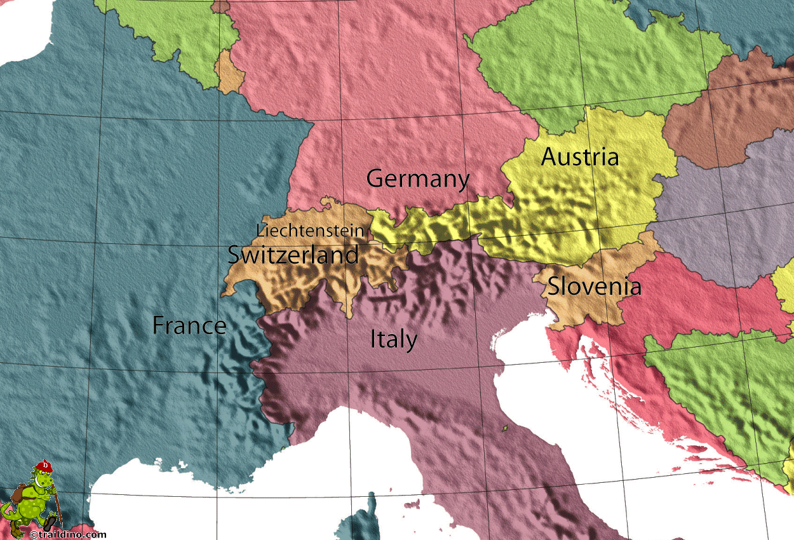

The Alps are the highest and most extensive mountain range system that lies entirely in Europe. It stretches across eight Alpine countries:
- Austria
- Officially the Republic of Austria in Central Europe - Capital: Vienna.
- France
- Officially the French Republic in Western Europe - Capital: Paris.
- Germany
- Officially the Federal Republic of Germany in Central-Western Europe - Capital: Berlin
- Italy
- Officially the Italian Republic, and often referred to as Lo Stivale (the Boot) - Capital: Rome
- Liechtenstein
- Officially the Principality of Liechtenstein in Central Europe - Capital: Vaduz
- Monaco
- Officially the Principality of Monaco in Western Europe - Capital: Monaco
- Slovenia
- Officially the Republic of Slovenia in Southern Central Europe - Capital: Ljubljana
- Switzerland
- Officially the Swiss Confederation in Western-Central Europe - Capital: Bern
Mont Blanc spans the French–Italian border, and at 4,810 m (15,781 ft) is the highest mountain in the Alps. The Alpine region area contains about a hundred peaks higher than 4000 meters.
Geography
The Alps are a crescent shaped geographic feature of central Europe that ranges in a 800 km (500 mi) arc from east to west and is 200 km (120 mi) in width.
Ecology
Fauna